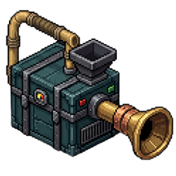

Блоков от глаза до цели. На силе 5 — 5 блоков; на силе 10 с «Воздуханом III» — 25.
ПЫЛЕСОС / №26ZITRAKSMODE / ИНСТРУМЕНТ
ПЫЛЕСОС

ОРИГИНАЛЬНАЯ 3D-МОДЕЛЬСбор предметов направленным потоком.
Пять фильтров, свой предмет. До 177 ячеек.
Зачарование «Воздухан» III.
уборку ↘10 УРОВНЕЙ МОЩНОСТИ
5 ФИЛЬТРОВ + СВОЙ ПРЕДМЕТ
vacuumserverevents · струя
Конус: 0.30 + сила × 0.025 радНаправленный поток
Конус следует за курсором. Предметы не телепортируются: сначала подхватываются потоком, потом летят в сопло. То, что не прошло фильтр, остаётся на полу.
ПОСЛЕ ШАХТЫНа полу: 0
ДАЛЬНОСТЬ 5 бл.ВНУТРИ 0СВОБОДНО 27
Предметы на полу. Выберите фильтр.
или колесо над полом
БЕРЁМ ТОЛЬКО
Всё готово. Наведи на добычу и зажми кнопку.
ФИЛЬТР ВЛИЯЕТ НА СБОР,
А НЕ НА ОТОБРАЖЕНИЕ ПРЕДМЕТОВ
А НЕ НА ОТОБРАЖЕНИЕ ПРЕДМЕТОВ
Это схема вики, а не запущенный Minecraft. Режимы, дальность, угол захвата и ускорение потока взяты из мода; пол и россыпь предметов — чтобы попробовать их руками. Для клавиатуры: фокус на поле → ←/→ и пробел.
vacuumserverevents · формулы
Всё ниже — из исходников мода, без округленийКак считается струя
Пылесос не «тянет предметы» абстрактно: у дальности, ширины конуса и разгона предмета есть формулы, а у хранилища — жёсткий потолок. Вот они без прикрас.
Радиан угла захвата: от 0.325 на первой силе до 0.55 на десятой. Предмет должен лежать внутри конуса.
Первый тик предмет еле двигается, дальше струя разгоняет его всё сильнее.
Предмет не может лететь быстрее, чем позволяет расстояние: он не перелетит сквозь игрока на высокой силе.
На этом расстоянии предмет забирается внутрь. Если хранилище полно — остаётся лежать и ждать.
Старая скорость предмета каждый раз срезается вдвое, и только потом добавляется движение к соплу.
СилаДальностьКонусСтарт разгона
11 блок0.325 рад0.021
55 блоков0.425 рад0.045
1010 блоков0.550 рад0.075
10 + «Воздухан» III25 блоков0.550 рад0.075
Что происходит позади игрока
Задняя струя работает на радиус 2.2 блока и отталкивает тех, кто оказался сзади (угол с направлением взгляда больше 0.35). Сила толчка — 0.008 × (уровень «Воздухана» + 1): без чар ×1, «Воздухан» I/II/III дают ×2, ×3 и ×4. Это отбрасывание, а не урон.
Помощь в движении
Пылесос слегка подталкивает игрока: +0.004 к скорости вперёд и +0.006 назад. Разница сделана намеренно — отступать от струи легче, чем идти на неё.
Режим «Еда» и урожай
Раз в 10 тиков пылесос проходит конусом по высоте от −3 до +2 блоков и срезает зрелые растения — не больше 32 за один тик, чтобы большая ферма не подвесила сервер. Растение остаётся на месте и снова становится незрелым: урожай выпадает предметами, а не исчезает.
Хранилище и перенос
Базово 27 ячеек, каждый установленный сундук добавляет 10, максимум — 15 сундуков и 177 ячеек. Одинаковые стаки сливаются, содержимое сортируется по ID и NBT. Массовый перенос идёт по одному слоту за игровой тик — поэтому «Забрать всё» не мгновенный.
vacuumfiltermode · пять режимов
Четвёртый сток — это тоже фильтрПять фильтров
Фильтр решает, что вообще попадёт внутрь. В моде их пять, и каждый проверяет предмет по своим правилам — а не по общему списку «руда/блок/еда».
Всё, чей ID похож на руду: ore, raw_, уголь, алмаз, изумруд, лазурит, кварц, аметист, ancient_debris, медь, железо, золото, олово, серебро, свинец, никель, уран.
Сплошные блоки без блок-сущностей: земля, камень, дерево. Наковальня и сундуки — исключены, они не считаются обычным блоком.
Всё съедобное и пшеница. Только в этом режиме работает сбор урожая: зрелые растения срезаются конусом.
Всё, что не еда, не блок и не руда: палки, перья, стрелы, редстоун, сундуки, воронки, зачарованные книги. По сути — режим «прочее».
Один конкретный предмет по ID: minecraft:diamond или просто «алмаз». В пылесосе хранится до десяти последних выбранных.
vacuumstorage · nbt
27 + 10 за сундук · максимум 177 ячеекВнутреннее хранилище
Содержимое, мощность, фильтр и улучшения сохраняются в каждом пылесосе отдельно. Переключение между А и Б показывает два независимых экземпляра.

Сундук — это ещё 10 ячеек.Установлено 0 из 15
ПЫЛЕСОС А27 / 177 ячеек
1–27
Нажми на слот — забрать стак.
Предметы сгруппированы и отсортированы по ID.
В КАРМАНАХ ИГРОКАПока пусто
airuhanenchantment · редкая
+5 блоков дальности за уровеньЗачарование «Воздухан»
ЗАДНИЙ ПОТОКЗадний поток: ×1
«Воздухан» добавляет по пять блоков дальности за уровень. А струя сзади становится сильнее: сущности за спиной отталкивает от игрока.
ВОЗДУХАН
Дальность сейчас 5 блоков.
Показана сила струи, не боевой урон. Попробуй III, а потом вернись к россыпи.recipes · верстак
Два бамбука, сундук, воронка, выбрасывательРецепт крафта
Выбери деталь и поставь в клетку. Пустые клетки тоже часть схемы — как в настоящем верстаке.
ВЕРСТАК
Сначала собери рецепт
vacuumadvancementevents · 1200 тиков
Сила 10 · 60 секунд без остановкиМаксимальная мощность
00ИЗ 60 СЕКУНД
Сила 10. Шестьдесят секунд непрерывного потока. Остановка или снижение силы — и отсчёт с нуля. В моде это 1 200 тиков, и счётчик перезапускается при любой паузе.
Таймер идёт только на открытой вкладке. Прогресс сохранится в достижениях.vacuumdata · nbt
То, о чём молчат первые страницыПять оговорок
Пшеница и сбор урожая
Пшеница специально включена в фильтр «Еда», хотя сама по себе не является съедобным предметом. На грядке сбор зрелых растений работает только в режиме «Еда»: растение остаётся на месте и возвращается к нулевому возрасту.
Режимы фильтрации в игре
В игре пять фильтров: «Руды», «Блоки», «Еда», «Разное» и конкретный предмет по названию или ID. На стенде доступны образцы из подсказок, в моде поиск работает по реестру предметов.
Сохранение параметров и предметов
Мощность, фильтр, последние десять выбранных предметов, улучшения, чары и содержимое сохраняются отдельно для двух экземпляров. Из старого сохранения ничего не выбрасывается. NBT у образцов одинаковый, поэтому здесь они сортируются только по ID. Автоматический перенос идёт по одному слоту за игровой тик.
Что остаётся на полу
Фильтр меняет только сбор. На экране видна вся россыпь, но в пылесос уходит лишь то, что подошло под фильтр. Отдельный случай — свободные слоты: если хранилище забито, предмет остаётся лежать и подсвечивается сообщением.
Где ставить «Воздухан»
Только на пылесос, только в основной руке. Максимальный уровень — III, редкость — высокая. Цена наложения растёт с уровнем: базовая ставка плюс надбавка за каждую следующую ступень.
advancements/26_vacuum
Без следа. Кроме достижений.
Три настоящих достижения мода: собрать пылесос, добыть три «Воздухана» и выдержать минуту на максимальной силе. Названия и условия — из мода.
история мода
Пункт появился 07.08.2026